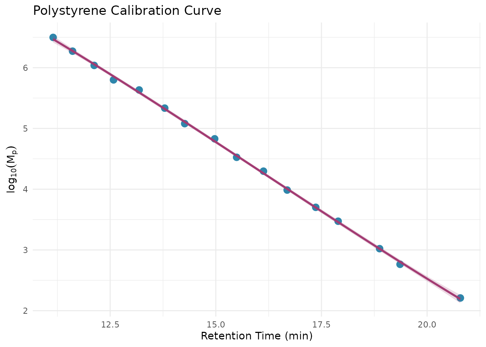

What You’ll Learn
By the end of this tutorial, you will be able to:
- Load and convert SEC chromatogram data into the measure format
- Build a recipe that processes your detector signals
- Apply calibration to convert retention time to molecular weight
- Calculate MW averages (Mn, Mw, Mz, dispersity)
Time to complete: ~15 minutes
Prerequisites
Before starting, you should have: - Basic R knowledge (data frames, pipes, functions) - R and RStudio installed - No prior SEC/GPC knowledge required (we’ll cover the basics)
Overview
measure.sec provides preprocessing steps for Size Exclusion Chromatography (SEC) and Gel Permeation Chromatography (GPC) data analysis. It extends the measure package using the recipes framework.
What is SEC/GPC?
Size Exclusion Chromatography (SEC), also known as Gel Permeation Chromatography (GPC), separates molecules by size. Larger molecules elute faster (excluded from pores), smaller molecules elute slower (enter pores). This lets you determine molecular weight averages (Mn, Mw, Mz) and dispersity (distribution breadth).
SEC data consists of chromatograms (detector response vs. elution time). Common detectors include RI (concentration), UV (chromophores), and light scattering (absolute MW). This package processes these signals to extract molecular weight information.
Workflow Overview
The typical SEC analysis workflow follows these steps:
┌─────────────────────────────────────────────────────────────────────────┐
│ SEC Analysis Workflow │
└─────────────────────────────────────────────────────────────────────────┘
┌──────────────┐ ┌──────────────┐ ┌──────────────┐
│ Raw Data │────▶│ Preprocess │────▶│ Calibrate │
│ (CSV/Export) │ │ Signals │ │ MW Scale │
└──────────────┘ └──────────────┘ └──────────────┘
│ │ │
│ │ │
▼ ▼ ▼
• Detector signals • Baseline correct • Apply standards
• Elution times • Align detectors • Or use MALS for
• Sample metadata • Convert units absolute MW
│
▼
┌──────────────────────────────────────┐
│ Calculate Results │
│ • MW averages (Mn, Mw, Mz) │
│ • Dispersity │
│ • MW distribution │
│ • Aggregate/fragment % │
└──────────────────────────────────────┘In measure.sec, each box becomes one or more recipe steps. You chain these steps together into a reproducible analysis pipeline.
Basic Workflow Overview
A typical SEC analysis starts with raw detector signals, converts them to the measure format, applies baseline correction, processes detector signals with appropriate normalization factors, then either applies calibration from standards (conventional) or uses light scattering for absolute molecular weight (MALS).
flowchart TD
A[Raw Chromatogram<br>RI, UV, MALS signals] --> B[step_measure_input_long<br>Convert to measure format]
B --> C[step_sec_baseline<br>Baseline correction]
C --> D[step_sec_ri / step_sec_uv<br>Detector processing with dn/dc or ε]
D --> E{Calibration<br>method?}
E -->|"Standards available<br>(same polymer type)"| F[step_sec_conventional_cal<br>Polynomial fit to standards]
E -->|"MALS detector<br>(absolute MW needed)"| G[step_sec_mals<br>Angular extrapolation<br>Zimm/Debye/Berry]
F --> H[step_sec_mw_averages<br>Calculate Mn, Mw, Mz]
G --> I[Absolute MW & Rg<br>directly from MALS]
H --> J[Results<br>MW averages, distributions, plots]
I --> J
style A fill:#e1f5fe
style J fill:#c8e6c9Choose conventional calibration when you have narrow MW standards of the same polymer type. Choose MALS when you need absolute MW without polymer-specific standards or when analyzing unknown polymers.
Setup
library(measure)
#> Loading required package: recipes
#> Loading required package: dplyr
#>
#> Attaching package: 'dplyr'
#> The following objects are masked from 'package:stats':
#>
#> filter, lag
#> The following objects are masked from 'package:base':
#>
#> intersect, setdiff, setequal, union
#>
#> Attaching package: 'recipes'
#> The following object is masked from 'package:stats':
#>
#> step
library(measure.sec)
library(recipes)
library(dplyr)
library(ggplot2)The Data Model
SEC data in measure.sec uses the measure package’s nested tibble structure. Understanding this structure is key to working effectively with the package.
measure_tbl: A Single Chromatogram
A measure_tbl is a tibble (data frame)
representing a single chromatogram with two required columns:
-
location: The x-axis values—typically elution time (minutes) or elution volume (mL) -
value: The y-axis values—detector response (mV, AU, or processed units)
Think of it as one line on a chromatogram plot. For example, an RI
detector signal from one injection is stored as a
measure_tbl.
measure_list: Multiple Chromatograms (Internal Format)
A measure_list is a list column
containing multiple measure_tbl objects. This is the
internal format used by measure.sec recipe steps—you
typically won’t create this yourself. Instead,
step_measure_input_long() converts your raw data into this
format automatically.
After conversion, your data will look like this:
┌──────────────────────────────────────────────────────────────┐
│ sample_id known_mw dn_dc ri │
├──────────────────────────────────────────────────────────────┤
│ "PS-50K" 50000 0.185 <measure_list[1]> │
│ "PS-100K" 100000 0.185 <measure_list[1]> │
│ "PMMA-75K" 75000 0.084 <measure_list[1]> │
└──────────────────────────────────────────────────────────────┘
│
▼
Each entry contains a measure_tbl:
location │ value
─────────┼────────
5.0 │ 0.002
5.1 │ 0.015
5.2 │ 0.089
... │ ...This nested structure has several advantages:
- Tidy organization: Each row is one sample with all its metadata and chromatogram(s)
- Batch processing: Apply the same recipe to many samples at once
- Multiple detectors: Store RI, UV, and MALS signals as separate nested columns
-
Metadata preservation: Sample properties like
dn_dcorknown_mwtravel with the chromatogram
Example Dataset
The package includes sec_triple_detect, a synthetic
multi-detector SEC dataset in long format (one row per
time point). This is a good starting point for learning the workflow
before analyzing your own data.
# Load the example dataset
data(sec_triple_detect, package = "measure.sec")
# View the structure - this is LONG format data (one row per time point)
# The signal columns (ri_signal, uv_signal, mals_signal) are numeric vectors
glimpse(sec_triple_detect)
#> Rows: 24,012
#> Columns: 11
#> $ sample_id <chr> "PS-1K", "PS-1K", "PS-1K", "PS-1K", "PS-1K", "PS-1K",…
#> $ sample_type <chr> "standard", "standard", "standard", "standard", "stan…
#> $ polymer_type <chr> "polystyrene", "polystyrene", "polystyrene", "polysty…
#> $ elution_time <dbl> 5.00, 5.01, 5.02, 5.03, 5.04, 5.05, 5.06, 5.07, 5.08,…
#> $ ri_signal <dbl> 6.926392e-04, 0.000000e+00, 3.199253e-04, 4.197175e-0…
#> $ uv_signal <dbl> 0.0002034583, 0.0000000000, 0.0000000000, 0.000000000…
#> $ mals_signal <dbl> 3.370385e-05, 3.483481e-05, 3.102092e-05, 3.261962e-0…
#> $ known_mw <dbl> 1000, 1000, 1000, 1000, 1000, 1000, 1000, 1000, 1000,…
#> $ known_dispersity <dbl> 1.05, 1.05, 1.05, 1.05, 1.05, 1.05, 1.05, 1.05, 1.05,…
#> $ dn_dc <dbl> 0.185, 0.185, 0.185, 0.185, 0.185, 0.185, 0.185, 0.18…
#> $ extinction_coef <dbl> 1.2, 1.2, 1.2, 1.2, 1.2, 1.2, 1.2, 1.2, 1.2, 1.2, 1.2…The dataset contains:
- 12 polymer samples: polystyrene (PS), PMMA, PEG, and copolymers
- ~2,000 time points per sample: giving 24,012 total rows
- Three detector signals: RI, UV, and MALS (as numeric columns)
- Known molecular weights: For validating your analysis
- Optical constants: dn/dc and extinction coefficients (needed for quantitative analysis)
# View the unique samples in the dataset
# Each sample_id represents one injection; the chromatogram spans many rows
sec_triple_detect |>
distinct(sample_id, sample_type, polymer_type) |>
print(n = 12)
#> # A tibble: 12 × 3
#> sample_id sample_type polymer_type
#> <chr> <chr> <chr>
#> 1 PS-1K standard polystyrene
#> 2 PS-10K standard polystyrene
#> 3 PS-50K standard polystyrene
#> 4 PS-100K standard polystyrene
#> 5 PS-500K standard polystyrene
#> 6 PMMA-Low sample pmma
#> 7 PMMA-Med sample pmma
#> 8 PMMA-High sample pmma
#> 9 PEG-5K sample peg
#> 10 PEG-20K sample peg
#> 11 Copoly-A sample copolymer
#> 12 Copoly-B sample copolymerBasic Workflow: RI Detector Analysis
Let’s walk through a complete analysis of a polystyrene sample using the RI detector. This demonstrates the core pattern you’ll use for all SEC analysis.
# Select a single polystyrene standard for this example
# In practice, you'd often process many samples at once
ps_sample <- sec_triple_detect |>
filter(sample_id == "PS-50K")
# View sample info - note this is still long format (many rows per sample)
ps_sample |>
select(sample_id, polymer_type, known_mw, elution_time, ri_signal) |>
head()
#> # A tibble: 6 × 5
#> sample_id polymer_type known_mw elution_time ri_signal
#> <chr> <chr> <dbl> <dbl> <dbl>
#> 1 PS-50K polystyrene 50000 5 0
#> 2 PS-50K polystyrene 50000 5.01 0.000279
#> 3 PS-50K polystyrene 50000 5.02 0
#> 4 PS-50K polystyrene 50000 5.03 0
#> 5 PS-50K polystyrene 50000 5.04 0.000842
#> 6 PS-50K polystyrene 50000 5.05 0.000483Step 1: Create a Recipe
Recipes define a sequence of preprocessing steps. Think of a recipe as a blueprint for your analysis—it describes what to do, but doesn’t do it yet. This separation lets you define the workflow once and apply it to many samples.
# Start a recipe with your data
# The formula specifies: predictor columns ~ grouping column
# sample_id identifies which rows belong to each chromatogram
rec <- recipe(
ri_signal + elution_time + dn_dc ~ sample_id,
data = ps_sample
) |>
update_role(sample_id, new_role = "id") |>
# Convert the ri_signal column to measure format
# This step tells recipes how to interpret your chromatogram data
step_measure_input_long(
ri_signal,
location = vars(elution_time),
col_name = "ri"
)Step 2: Add Preprocessing Steps
Chain additional steps using the pipe (|>). Each step
transforms the data in sequence:
rec <- recipe(
ri_signal + elution_time + dn_dc ~ sample_id,
data = ps_sample
) |>
update_role(sample_id, new_role = "id") |>
# First: convert raw signal to measure format
step_measure_input_long(
ri_signal,
location = vars(elution_time),
col_name = "ri"
) |>
# Second: correct the baseline (removes drift and offset)
step_sec_baseline(measures = "ri") |>
# Third: process RI signal using the sample's dn/dc value
# Dividing by dn/dc converts the RI signal to concentration-proportional units
step_sec_ri(measures = "ri", dn_dc_column = "dn_dc")Step 3: Prep and Bake
Two functions execute your recipe:
-
prep(): Learns any required parameters from the training data (like baseline fit coefficients) -
bake(): Applies the transformations to produce results
# Prep: Learn parameters from the data
prepped <- prep(rec)
# Bake: Apply transformations (new_data = NULL means use the training data)
result <- bake(prepped, new_data = NULL)
# View the processed data - ri now contains the baseline-corrected,
# concentration-converted chromatogram
result |>
select(sample_id, ri)
#> # A tibble: 1 × 2
#> sample_id ri
#> <chr> <meas>
#> 1 PS-50K [2,001 × 2]Why two steps? This design lets you prep once on training data (like calibration standards), then bake on new samples without re-learning parameters. It also makes your analysis reproducible.
✓ Checkpoint: You’ve successfully converted raw
detector data into the measure format and applied baseline correction.
Your result tibble now contains a processed ri
column ready for calibration.
Molecular Weight Averages
The most common outputs from SEC analysis are molecular weight averages: - Mn (number-average): Emphasizes lower MW species - Mw (weight-average): Emphasizes higher MW species - Mz (z-average): Even more sensitive to high MW species - Dispersity (Mw/Mn): Measures breadth of the MW distribution (1.0 = monodisperse)
Use step_sec_mw_averages() to calculate these. This step
requires that the x-axis (location) values already represent
log₁₀(MW)—which is what step_sec_conventional_cal()
provides. See the Calibration section below for the complete
workflow.
Calibration Curves
Most SEC analysis requires calibration to convert retention time to molecular weight. The most common approach uses narrow standards—polymers with known molecular weights and low dispersity—to build a calibration curve.
Note: If you have a light scattering detector (MALS), you can determine absolute molecular weights without calibration. See
vignette("triple-detection")for details.
# Load polystyrene narrow standards
# These are well-characterized polymers used to build the calibration curve
data(sec_ps_standards, package = "measure.sec")
# View the standards - each has a known peak molecular weight (Mp)
sec_ps_standards |>
select(standard_name, mp, log_mp, retention_time) |>
print(n = 8)
#> # A tibble: 16 × 4
#> standard_name mp log_mp retention_time
#> <chr> <dbl> <dbl> <dbl>
#> 1 PS-3150000 3150000 6.50 11.2
#> 2 PS-1870000 1870000 6.27 11.6
#> 3 PS-1090000 1090000 6.04 12.1
#> 4 PS-630000 630000 5.80 12.6
#> 5 PS-430000 430000 5.63 13.2
#> 6 PS-216000 216000 5.33 13.8
#> 7 PS-120000 120000 5.08 14.3
#> 8 PS-67500 67500 4.83 15.0
#> # ℹ 8 more rows
# Visualize the calibration curve
# The relationship between log(MW) and retention time is typically linear
# or slightly curved, so we fit a polynomial
ggplot(sec_ps_standards, aes(retention_time, log_mp)) +
geom_point(size = 3, color = "#2E86AB") +
geom_smooth(
method = "lm",
formula = y ~ poly(x, 3),
se = TRUE,
color = "#A23B72",
fill = "#A23B72",
alpha = 0.2
) +
labs(
x = "Retention Time (min)",
y = expression(log[10](M[p])),
title = "Polystyrene Calibration Curve"
) +
theme_minimal()
Apply the calibration using
step_sec_conventional_cal():
# Prepare standards in the format expected by the calibration step
# Needs columns: retention (time/volume) and log_mw
ps_cal <- sec_ps_standards |>
select(retention = retention_time, log_mw = log_mp)
rec_cal <- recipe(
ri_signal + elution_time + dn_dc ~ sample_id,
data = ps_sample
) |>
update_role(sample_id, new_role = "id") |>
step_measure_input_long(
ri_signal,
location = vars(elution_time),
col_name = "ri"
) |>
step_sec_baseline(measures = "ri") |>
# Apply conventional calibration using polystyrene standards
# This converts retention time to log10(MW) on the x-axis
# fit_type options: "linear", "quadratic", "cubic" (most common)
step_sec_conventional_cal(
standards = ps_cal,
fit_type = "cubic"
) |>
# Calculate MW averages from the calibrated chromatogram
# The calibration step converted location values to log10(MW)
step_sec_mw_averages()
prepped_cal <- prep(rec_cal)
#> Warning: Standard at 12.58 has 14.4% MW deviation.
#> ℹ Consider removing outlier standards or using a different fit type.
#> Warning: 1037 points (51.8%) are outside calibration range.
#> ℹ Calibration range: 11.15 to 20.79
result_cal <- bake(prepped_cal, new_data = NULL)
# View molecular weight results
# New columns are added with mw_ prefix
result_cal |>
select(sample_id, mw_mn, mw_mw, mw_mz, mw_dispersity)
#> # A tibble: 1 × 5
#> sample_id mw_mn mw_mw mw_mz mw_dispersity
#> <chr> <dbl> <dbl> <dbl> <dbl>
#> 1 PS-50K 419927756. 8.24e21 7.81e23 1.96e13Important: Conventional calibration assumes your sample has similar hydrodynamic behavior to your standards. Polystyrene standards work well for other flexible polymers in THF, but for proteins in aqueous SEC, use protein standards or light scattering.
✓ Checkpoint: You’ve completed a full SEC analysis!
Your result_cal tibble contains molecular weight averages
(Mn, Mw, Mz) and dispersity calculated from your chromatogram using
conventional calibration.
Available Steps
The package provides a comprehensive set of recipe steps. Here’s a quick reference organized by function:
Preprocessing
-
step_sec_baseline(): SEC-optimized baseline correction -
step_sec_detector_delay(): Correct inter-detector delays
Detector Processing
-
step_sec_ri(): RI detector with dn/dc -
step_sec_uv(): UV detector with extinction coefficient -
step_sec_mals(),step_sec_lals(),step_sec_rals(): Light scattering -
step_sec_dls(): Dynamic light scattering -
step_sec_viscometer(): Differential viscometer
Molecular Weight
-
step_sec_mw_averages(): Mn, Mw, Mz, dispersity -
step_sec_mw_fractions(): MW fractions above/below cutoffs -
step_sec_mw_distribution(): Differential/cumulative MWD -
step_sec_conventional_cal(): Narrow standard calibration -
step_sec_universal_cal(): Universal calibration
Composition & Protein
-
step_sec_uv_ri_ratio(): UV/RI ratio for heterogeneity -
step_sec_composition(): Copolymer composition -
step_sec_aggregates(): HMWS/monomer/LMWS quantitation -
step_sec_protein(): Complete protein SEC workflow
Troubleshooting
Common issues and quick fixes:
| Problem | Solution |
|---|---|
| “Column not found” | Check column names match exactly (case-sensitive) |
| “No measure columns found” | Add step_measure_input_long() at the start of your
recipe |
| NA values in MW results | Check calibration range covers your retention times |
| Recipe won’t prep | Try prepping with fewer steps to isolate the issue |
# Debugging tips:
names(your_data) # Check column names
measure::find_measure_cols(result) # Find measure columns after bake
result$ri[[1]] |> summary() # Inspect chromatogram dataNext Steps
Now that you understand the basics, explore these vignettes for specialized workflows:
| Vignette | Use when you need to… |
|---|---|
| Multi-Detector SEC | Integrate multiple detectors (RI + UV + LS) |
| MALS Detection | Get absolute MW and radius of gyration |
| LALS/RALS Detection | Use single-angle light scattering |
| Protein SEC | Analyze aggregates (HMWS/monomer/LMWS) |
| Copolymer Composition | Determine composition via UV/RI ratio |
| Calibration Management | Save, load, and reuse calibrations |
| System Suitability | Set up QC checks and column monitoring |
| Exporting Results | Generate summary tables and reports |
You can also browse all available functions with:
# See all SEC/GPC steps registered with measure
measure::measure_steps(techniques = "SEC/GPC")Session Info
sessionInfo()
#> R version 4.5.2 (2025-10-31)
#> Platform: x86_64-pc-linux-gnu
#> Running under: Ubuntu 24.04.3 LTS
#>
#> Matrix products: default
#> BLAS: /usr/lib/x86_64-linux-gnu/openblas-pthread/libblas.so.3
#> LAPACK: /usr/lib/x86_64-linux-gnu/openblas-pthread/libopenblasp-r0.3.26.so; LAPACK version 3.12.0
#>
#> locale:
#> [1] LC_CTYPE=C.UTF-8 LC_NUMERIC=C LC_TIME=C.UTF-8
#> [4] LC_COLLATE=C.UTF-8 LC_MONETARY=C.UTF-8 LC_MESSAGES=C.UTF-8
#> [7] LC_PAPER=C.UTF-8 LC_NAME=C LC_ADDRESS=C
#> [10] LC_TELEPHONE=C LC_MEASUREMENT=C.UTF-8 LC_IDENTIFICATION=C
#>
#> time zone: UTC
#> tzcode source: system (glibc)
#>
#> attached base packages:
#> [1] stats graphics grDevices utils datasets methods base
#>
#> other attached packages:
#> [1] ggplot2_4.0.1 measure.sec_0.0.0.9000 measure_0.0.1.9001
#> [4] recipes_1.3.1 dplyr_1.1.4
#>
#> loaded via a namespace (and not attached):
#> [1] gtable_0.3.6 xfun_0.55 bslib_0.9.0
#> [4] lattice_0.22-7 vctrs_0.6.5 tools_4.5.2
#> [7] generics_0.1.4 parallel_4.5.2 tibble_3.3.0
#> [10] pkgconfig_2.0.3 Matrix_1.7-4 data.table_1.18.0
#> [13] RColorBrewer_1.1-3 S7_0.2.1 desc_1.4.3
#> [16] lifecycle_1.0.4 compiler_4.5.2 farver_2.1.2
#> [19] textshaping_1.0.4 codetools_0.2-20 htmltools_0.5.9
#> [22] class_7.3-23 sass_0.4.10 yaml_2.3.12
#> [25] prodlim_2025.04.28 tidyr_1.3.2 pillar_1.11.1
#> [28] pkgdown_2.2.0 jquerylib_0.1.4 MASS_7.3-65
#> [31] cachem_1.1.0 gower_1.0.2 rpart_4.1.24
#> [34] nlme_3.1-168 parallelly_1.46.0 lava_1.8.2
#> [37] tidyselect_1.2.1 digest_0.6.39 future_1.68.0
#> [40] purrr_1.2.0 listenv_0.10.0 labeling_0.4.3
#> [43] splines_4.5.2 fastmap_1.2.0 grid_4.5.2
#> [46] cli_3.6.5 magrittr_2.0.4 utf8_1.2.6
#> [49] survival_3.8-3 future.apply_1.20.1 withr_3.0.2
#> [52] scales_1.4.0 lubridate_1.9.4 timechange_0.3.0
#> [55] rmarkdown_2.30 globals_0.18.0 nnet_7.3-20
#> [58] timeDate_4051.111 ragg_1.5.0 evaluate_1.0.5
#> [61] knitr_1.51 hardhat_1.4.2 mgcv_1.9-3
#> [64] rlang_1.1.6 Rcpp_1.1.0 glue_1.8.0
#> [67] ipred_0.9-15 jsonlite_2.0.0 R6_2.6.1
#> [70] systemfonts_1.3.1 fs_1.6.6